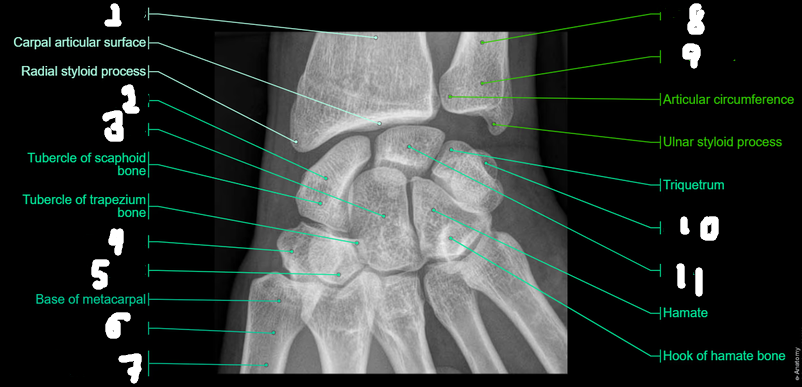
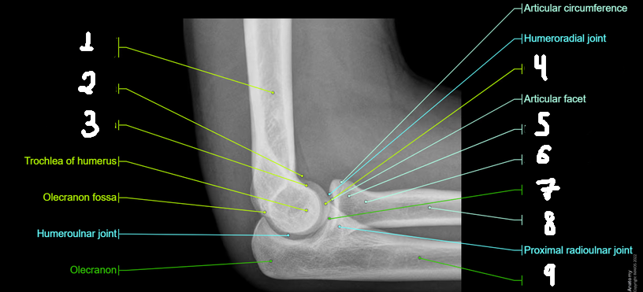
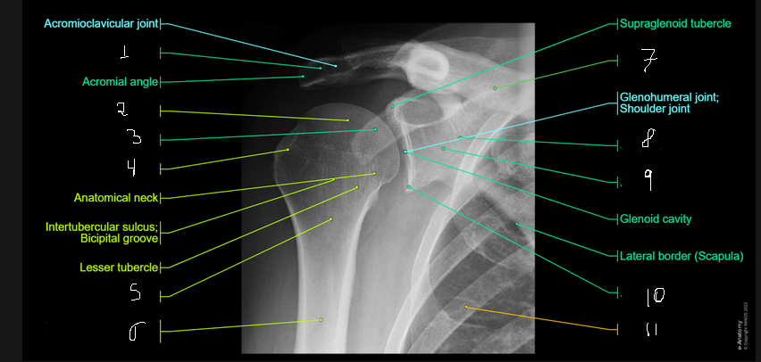

Questão 01 — Membros Superiores
Membros Superiores
0/7 questões respondidas
Breve Introdução
As seções de membros superiores e inferiores serão semelhantes no sentido de estilo de exercícios. Serão utilizadas imagens de Raio-X, TC e RM para exercícios de imagens e também terão exercícios de múltipla escolha e discurssivas selecionados pela professora Renata para a P1. Nos exercícios de escolha, a respotas estará neles mesmos, mas para os discurssivos as respotas estarão no final da página.
Questão 02 — Membros Superiores
Sobre a escápula, assinale a alternativa correta:
Questão 03 — Membros Superiores
Qual dos ossos a seguir faz parte do antebraço ?
Questão 04 — Membros Superiores
Um paciente sofre uma fratura do colo cirúrgico do úmero. Qual estrutura nervosa apresenta risco de lesão?
Questão 05 — Membros Superiores
Uma lesão completa do nervo supraescapular pode resultar principalmente em:
Questão 06 — Membros Superiores
Na fossa cubital, o estetoscópio é colocado sobre a:
Questão 07 — Membros Superiores
Qual conjunto apresenta somente ossos do carpo?
Questão 08 — Membros Superiores
A síndrome do túnel do carpo está diretamente relacionada à compressão do:
Questão 09 — Membros Superiores
O túnel do carpo é formado:
Questão 10 — Membros Superiores
Uma lesão do nervo radial pode produzir:
Exercício 11
Questões discurssiva - Membros Superiores
Descreva os principais ossos do membro superior, desde o cíngulo até os dedos da mão, destacando a organização do braço, antebraço e mão.
Exercício 12
Questões discurssiva - Membros Superiores
Explique a importância anatômica da clavícula na conexão entre o membro superior e o tronco e sua relação com a transmissão de forças.
Exercício 13
Questões discurssiva - Membros Superiores
Um paciente sofreu uma fratura do colo cirúrgico do úmero. Explique quais estruturas nervosas e vasculares podem ser comprometidas e quais consequências funcionais podem ocorrer.
Exercício 14
Questões discurssiva - Membros Superiores
Explique a organização dos compartimentos anterior e posterior do antebraço, relacionando-os, respectivamente, aos principais movimentos de flexão e extensão.
Exercício 15
Questões discurssiva - Membros Superiores
Um paciente apresenta parestesias e alterações motoras na mão decorrentes de compressão do nervo mediano no punho. Explique a anatomia do túnel do carpo e a relação entre sua estrutura e a síndrome do túnel do carpo.
Exercício 16
Identificação de estruturas em Radiografia
A imagem a seguir é uma radiografia de uma mão. Identifique as estruturas numeradas e indique-as no campo abaixo.

Exercício 17
Identificação de estruturas em Radiografia
A imagem a seguir é uma radiografia de um cotovelo. Identifique as estruturas numeradas

Exercício 18
Identificação de estruturas em Radiografia
A imagem a seguir é uma radiografia da região do ombro. Identifique as estruturas numeradas.
